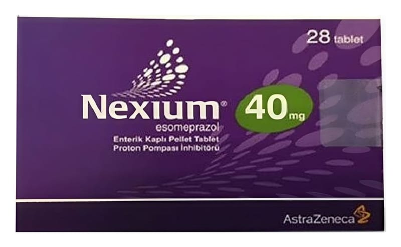

Nexium 40 mg Enterik Kaplı Pellet Tablet, 14 Adet

Ne için kullanılır
KT · Bölüm 1NEXİUM, esomeprazol etkin maddesini içerir ve “proton pompası inhibitörü” (PPI) olarak bilinen ilaçlardan biridir. Bu ilaçlar etkilerini midenizdeki asit oluşumunu azaltarak gösterir.
NEXİUM 40 mg tablet pembe renkli, köşeleri yuvarlatılmış dikdörtgen şeklinde, iki yanı da dışbükey, film kaplı, bir tarafında 40 mg, diğer tarafında
A
E I
baskısı taşıyan tablettir.
NEXİUM®aşağıdaki durumların tedavisinde kullanılır:
• Gastro-özofajial reflü hastalığında (GÖRH)
- Mide suyunun yemek borusuna (boğazınızı midenize bağlayan tüp) kaçışına bağlı yemek borusunda ağrı, iltihaplanma ve mide yanmasıdır (Erozif reflü özofajit’in tedavisinde)
- Mide suyunun yemek borusuna kaçışına bağlı mide yanması ve kusma gibi hastalık belirtilerinde (Gastro-özofajial reflü hastalığının semptomatik tedavisinde)
• Sürekli NSAİİ (non-steroidal anti-inflamatuvar ilaç) tedavisi gerektiren hastalarda
- Ağrı veya iltihaplanma için kullanılan bir ilacın neden olduğu, mide veya karın boşluğunun üst kısmında ağrı veya rahatsızlık gibi belirtiler (NSAİİ kullanımı ile ilişkili üst gastrointestinal belirtilerin tedavisinde)
- Ülserler: Ağrı ve iltihaplanma için kullanılan ilaçların neden olduğu ülserlerin iyileştirilmesi ve önlenmesinde (Gastrik ülserlerin iyileştirilmesi ile NSAİİ tedavisine bağlı gastrik ve duodenal ülserlerin önlenmesi)
• Ülserlere neden olan Helicobacter pylori isimli bir bakteri enfeksiyonunda
• Esomeprazol infüzyonluk çözelti ile tedavi sonrasında kanamayı durdurmayı sağlayan mekanizmaların (=hemostaz) sürdürülmesi ve mide veya duodenum (on iki parmak bağırsağı) ülserlerinde tekrar kanamanın önlenmesinde
• Midede aşırı asit oluşmasına neden olan hormon üreten tümörler (Zollinger-Ellison sendromu) dahil, midede aşırı asit salgısı durumlarında
Doktorunuzun tavsiyelerine uyunuz ve daha fazla bilgiye ihtiyaç duyarsanız doktor veya eczacınıza danışınız.